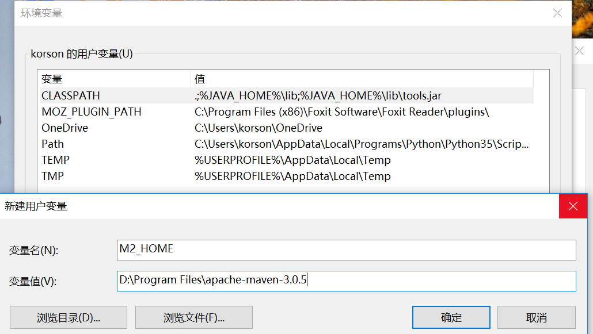
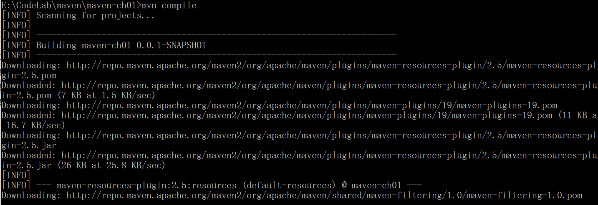
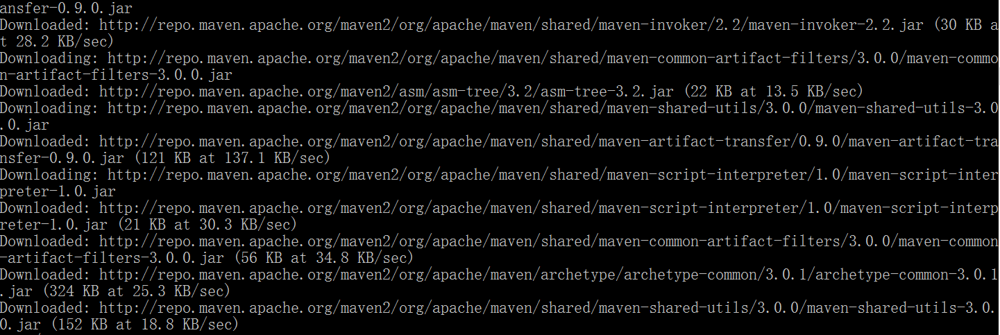
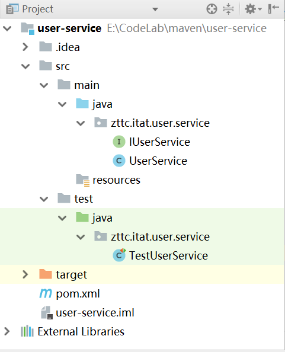

本文先简单介绍一下Maven，并且我们通过一个小项目，来安装并使用Maven进行项目管理。
Maven笔记
推荐书籍：maven实战（许晓斌）
Maven概览
1.1 安装
先下载好maven：
apache-maven-3.0.5.zip
然后将这个压缩包解压，新建一个用户变量M2_HOME，将这个maven目录的路径拷贝到这个变量中：

然后在我们的path变量中加入maven的bin目录路径：
这样就把maven安装好了。可以在命令行中键入命令测试一下是否安装成功：
发现输入mvn -v以后，能正常显示对应的版本信息，说明安装成功。
1.2 新建一个项目
我们在D盘CodeLab文件夹下创建一个maven目录，在maven目录下创建一个maven-ch01目录，用来存放我们的模块。
然后在maven-ch01中创建一个pom.xml文件：
groupId指的是我们的项目，也就是说，我们的项目是zttc.itat.maven
artifactId指的是我们项目中的模块，这里是maven-ch01
version指的是我们当前的版本，这里是0.0.1快照版本
接下来我们在maven-ch01目录下创建一个src目录，在里面创建两个目录，一个是src，一个是test。在src下面逐层创建目录：main->java->zttc->itat->maven。然后在maven目录下创建一个java文件：HelloMaven.java。编写如下代码：
创建好我们的项目，我们就可以使用maven来编译这个项目。命令行切换到maven-ch01目录，执行mvn compile命令：

发现maven会根据需要，自动从网络中去查找需要的依赖，然后存到某一个位置，这个位置后面会讲到。
下载完成之后，会出现如下提示：
显示构建成功，然后我们去看我们原先的目录，发现在maven-ch01目录中多了一个target文件夹，这个文件夹里面就存放着我们编译好的文件：
这样就利用maven编译成功了
然后我们再在我们的test目录中创建路径：
maven\maven-ch01\src\test\java\zttc\itat\maven
在这个路径下创建一个java文件：TestHelloMaven.java
在里面编写测试代码：
然后我们在cmd命令行中切换到maven-ch01目录下，执行mvn test：
发现也会自动帮我们下载相关依赖，但是会找不到junit对应的包，因为我们没有将junit的路径加入到classpath中。我们为了让maven自动帮我们下载junit，可以在pom.xml中加入如下的一条依赖：
我们重新在命令行中执行刚刚的mvn test操作：
发现测试成功！
这里要注意一个小问题，也是本人在创建过程中出现的一个小问题，就是test路径一定要和man中的路径一致，这样才能正确的找到要测试的类。
我们发现test之后，target文件夹中又多了一些目录：
其中test-classes目录是存放测试类编译后的二进制文件，
surefire-reports是存放测试报告。
接下来我们执行mvn clean：
这样也会将相关的依赖下载下来，然后去将target文件夹删除。
接下来我们将test代码改错一点：
assertEquals(str,”hello:maven1”);
保存后再执行mvn test命令，发现运行失败：
这时我们再看target中的测试报告，发现有很详细的错误说明：
报告里直接提示了我们哪里出了问题，方便我们修正。
另外我们还可以执行mvn package命令，发现会自动帮我们编译、运行、测试maven-ch01，最后将maven-ch01打包成一个jar包，那么其他项目就可以去使用这个jar包：
我们现在就建一个新项目来使用这个jar包。
在maven目录下新建一个maven-ch02目录在这个目录下新建一个文件夹一个叫src，在src下新建main目录和test目录。然后同样在这个文件夹下新建一个pom.xml，内容如下：
在src下创建如下路径并 创建一个Hello.java文件：
这个Hello.java中使用到了maven-ch01中的类：
然后在命令行中切换到maven-ch02目录下，执行mvn compile命令，发现报错：
提示找不到zttc.itat.maven.HelloMaven这个类。
那么怎么去解决这个问题呢？
解决办法就是在pom.xml中加入HelloMaven的依赖：
这个就是我们在maven-ch01中定义的坐标，我们添加了这个依赖之后，再重新编译maven-ch02：
发现依然找不到。
其实我们应该先将目录切换到maven-ch01中，执行mvn install命令，然后再切回maven-ch02，执行mvn compile：
发现这次编译成功了。
由上面这个项目，我们已经直观地感受到了maven的作用，它可以让我们将程序划分成一个一个模块，然后在pom中对需要的模块添加依赖，然后maven就会自动帮我们下载需要的依赖和jar包。
1.3 仓库
maven在我们本地都有一个存放资源的仓库，win10默认位置在用户里面的.m2隐藏文件夹中，里面有个repository目录，存放了所有下载好的依赖：
如果我们执行一条mvn compile编译命令，在仓库中有对应依赖的话，就直接去仓库中找，如果没有的话就去网络中Downloading
当我们执行mvn install命令以后，maven会将jar包发布到本地仓库中。这样就解释了刚刚为什么我们需要先install maven-ch01模块后才能编译maven-ch02的原因。install以后maven-ch01的jar包发布到本地仓库，再compile maven-ch02，就会自动去本地仓库中去找ch01的jar包，从而就会编译成功。
Maven安装的注意事项
我们注意到，上面的仓库安装在C盘下用户目录下面，那么这样有一个很不方便的地方，就是当我们重装系统的时候，就会将本地仓库全部清空，这样就得不得又得到全球中央仓库中重新下载一次（http://mvnrepository.com/），很麻烦。
那么怎么能修改本地仓库位置呢？
2.1 设定自己的本地仓库
首先，我们需要找到安装maven的文件夹下面，找到里面conf目录下的setting.xml文件：
打开发现，里面定义了一个本地仓库位置是~/.m2/repository：
我们可以对这个位置进行修改。修改之前先去创建一个我们自己的本地仓库目录：
然后将我们原先仓库中的所有文件全部移动到这个仓库中。
接下来我们去修改settings.xml，加入一句：
然后继续去编译，发现编译成功，而且原来的仓库没增加内容，说明本地仓库建立好了。
2.2 中央仓库位置
中央仓库的位置我们可以在apache-maven-3.0.5\lib下的maven-model-builder-3.0.5.jar中进行查看。打开这个jar包，按照org路径一直查找到pom-4.0.0.xml文件，然后打开就可以看到：
那个url就是我们中央仓库的地址。我们在浏览器中打开：
发现里面包括了几乎我们所需要的所有的东西，比如junit、hibernate、spring等等。
当然我们也可以在search.maven.org中进行检索：
然后对需要的依赖进行复制：
2.3 自动构建maven的骨架
我们发现，每一个maven项目都有相同的文件目录结构，其实maven为我们提供了一个自动构建文件目录结构的命令，叫做mvn archetype:generate
我们输入这个命令试一下：

发现会自动下载骨架需要的依赖。
再执行一段时间后，会让我们来选择一个版本：
我们选择6，也就是最高的版本。
然后接下来会让我们去填写模块信息，填写如下：
回车，就会自动帮我们生成一个maven-ch03的模块：
当然，我们也可以直接在mvn archetype:generate后加参数，这样就不会再构建骨架中途再让我们去输入一些信息了：
这样也可以起到和上面相同的效果。
2.4 在IDEA中创建一个maven项目
我们新建一个project，然后在里面新建一个maven项目，填入相关信息
然后再选择我们本地的maven版本：
然后给项目起个名字叫做user-core，这样就创建好了一个maven项目：
然后我们再分别在test文件夹下面创建resources目录，这样就利用IDE创建好了一个maven项目。
在IDEA中建立简单的项目
注意，上面在建立项目时，要把本地仓库的设置文件修改成我们想要的：
3.1 建立user-core模块
创建如下的目录结构：
当然我们需要先创建好数据库和t_user表：
创建数据库
创建表
向表中插入一条数据：
将我们需要的jar包依赖写入pom.xml文件中：
然后我们先来写我们的model：
User.java
|
|
接下来写Dao的接口和实现类：
IUserDao.java：
UserDao.java：
里面涉及到一些hibernate、junit使用的常用方法，我们将其封装到util包中。其中AbstractDbUnitTestCaseDbUtil、EntitiesHelper、HibernateUtil都是junit01项目中写的，所以直接拿过来修改就可以了。
另外还需要将hibernate.cfg.xml和log4j.properties配置文件复制到src/main/resources/目录中进行修改即可。
现在我们来写一个隔绝了数据库的测试：
TestUserDao.java：
|
|
将t_user.xml拷贝到test的resources文件夹中：
然后我们在IDEA中找到工具栏上的help，点击Find Action，搜索maven projects。然后就可以在打开的maven projects窗口中，对我们的模块执行我们想要执行的命令，我们可以先执行clean，然后执行test：
运行结果会在IDEA下的窗口显示，这个项目是可以运行成功的。然后我们去查看数据库：
没有对数据库中原有数据产生任何影响，并且测试成功，这就是隔离数据库的测试。
3.2 建立user-log模块
先创建一个新的maven项目，叫做user-log：
然后添加一个包和一个Log类：
把需要的日志依赖都加入到pom.xml中：
最后我们将user-core和user-log都进行打包操作并发布到本地仓库中，也就是先clean然后install。
3.3 建立user-service模块
已经写好了model、dao，现在可以着手来写service了。我们再创建一个新的工程，叫做user-service。目录结构如下：

在pom.xml中建立依赖，把前面两个已经install的模块引进来：
这样就会自动将user-core和user-log以及它们引用的jar包都引进来，这就是依赖传递。
接下来我们来写Service的接口和实现类：
IUserService.java：
然后写测试类，由于写Service层的测试类的时候，可能Dao层还没有开发好，所以我们采用Easymock方式来对其交互方式进行测试（当然也要在pom.xml中加入easymock的依赖）：
这样我们再在maven project中执行clean和test命令，发现是通过的，说明service层可以用。接下来我们也需要将user-service进行install操作，发布到本地仓库中。